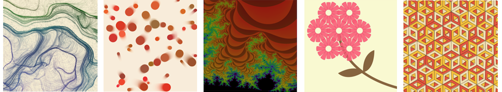

This project involves you creating a PowerPoint style slideshow program that can display a sequence of
images.
Create a Processing program that displays a set of digital images as a slideshow. The slideshow should allow
the user to advance to the next image or go back to the previous image using keyboard controls, or
automatically using a timer. If the user advances past the last image it should restart at the first image.
Consider implementing some visual effects to transition between images (e.g. fading to black between images,
or sliding in from the right etc.).
Here are some hints to help you along if you are wondering where to start with your program.
- You can use an array to store all the images in memory at once.
- If an image to be displayed is larger than the Processing window, resize it so the image fits properly
when displayed but is not distorted. Have a look at the Processing documentation for image() for help.
- For transitioning between images, consider using tint() to fade in / out, or move the image across the screen by changing the
location where it is drawn.
- Processing has its own built-in timer; for this you may find the method millis() useful.
There are plenty of extensions or variations you could add to your slideshow. For example:
- Automatically load all the .jpg images in a particular folder.
- Using the Processing Sound
library, play background music during the slideshow.
- Display your own showcase of Processing images you have produced during the BootCamp fortnight.
- Allow simple text to be displayed as part of your slideshow, for example as a title or closing credits.

Jo Wood, 2021